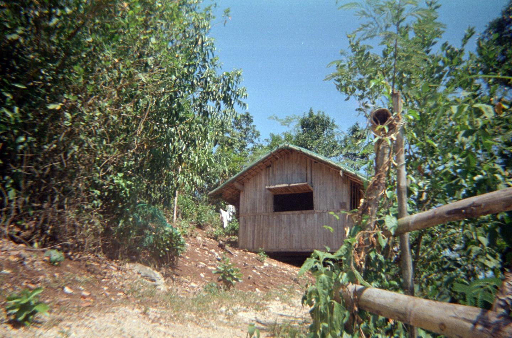

Projects
Digital Photography
Digital photography replicates the process of traditional film photography, but it uses an electronic sensor, rather than film, to capture images. These digital photographs are stored on a memory card, and their resolution is measured in megapixels.

Film Photography
Traditional film photography captures images by exposing individual frames on a roll of film to light. Film is made of plastic and layered with silver halide crystals that darken when exposed to light, capturing negatives of images. When a photographer uses up all the exposures on a roll of film, they take it to a darkroom and develop the photos using liquid chemicals.
